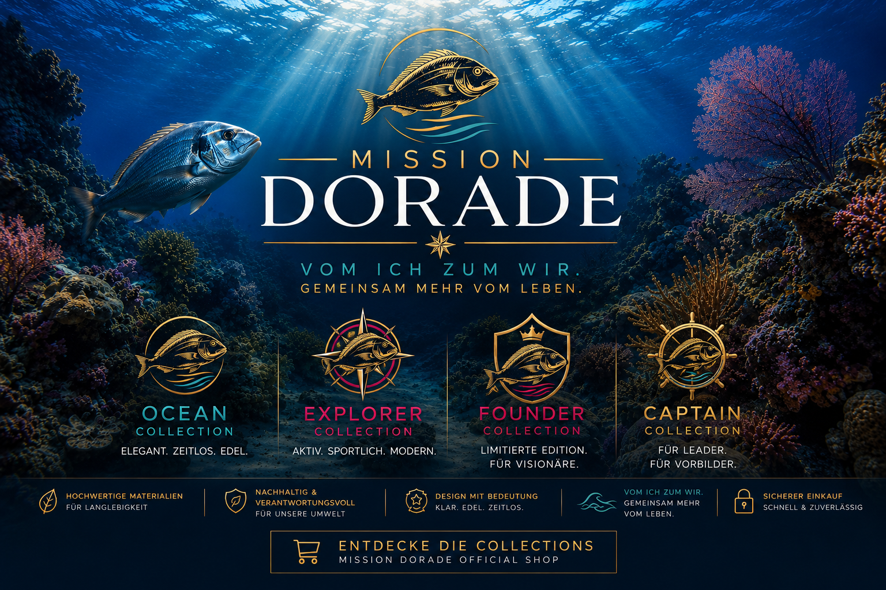
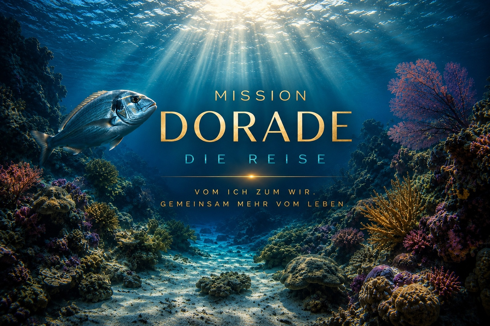
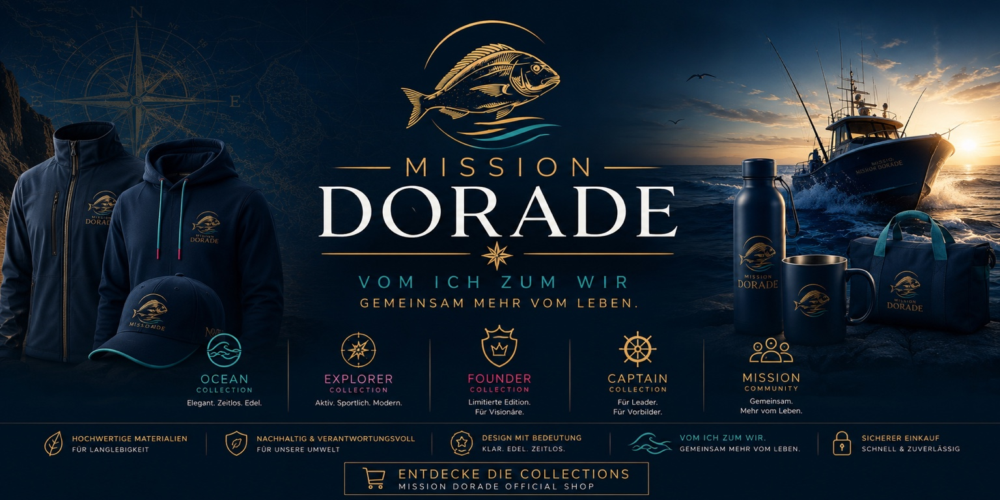
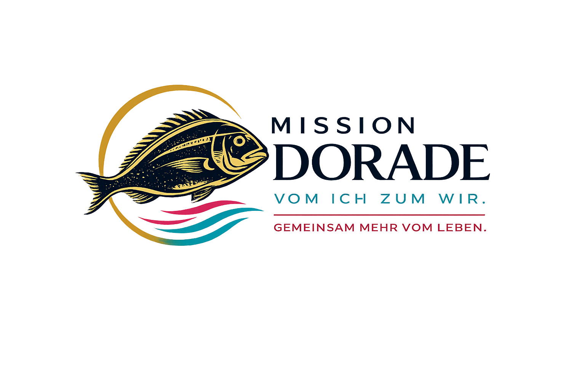
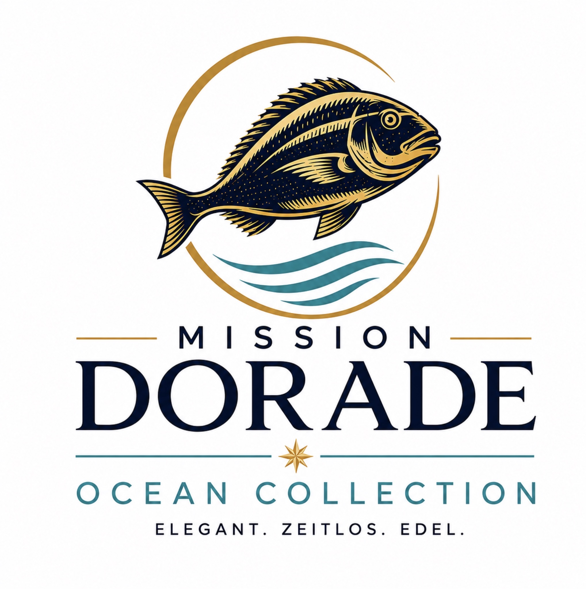
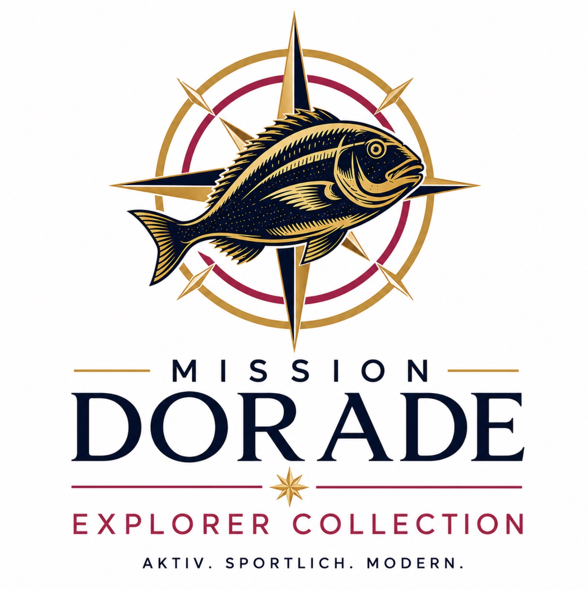
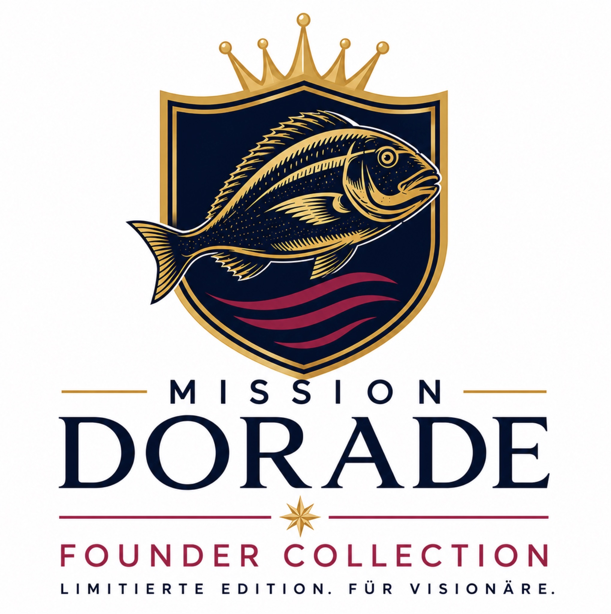
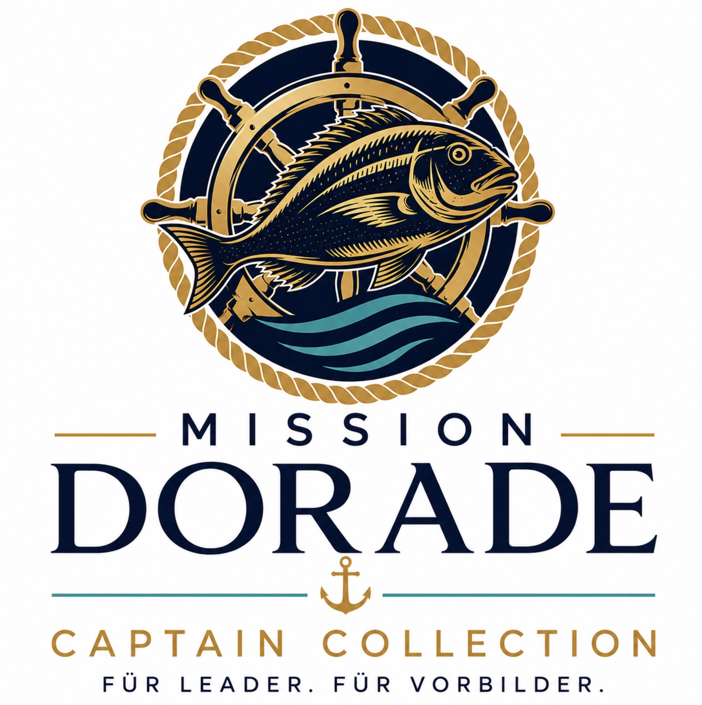

Standard · für alle
- Premium T-Shirt
- Premium Hoodie
- Polo-Shirt
- Baseball Cap
- Keramiktasse
- Baumwolltasche
- Aufkleber
- Schlüsselband
- Kugelschreiber
- Notizblock

Story, Markenwelt, Karriere- und Collection-Plan, Produkte, Logos, Bilder, VistaPrint-Verweise und vorbereitete Mockup-Plätze an einem festen Ort.
Wir verkaufen keine T-Shirts. Wir erzählen eine Geschichte.
Mission Dorade ist nicht einfach ein Shop. Mission Dorade ist ein Erlebnisweg. Jede Collection ist ein Kapitel dieser Reise und jedes Produkt wird zu einem sichtbaren Zeichen dafür, welchen Abschnitt ein Mensch bereits erreicht hat.
Die Reise beginnt am Strand. Ein Mensch steht allein am Meer. Abendlicht liegt auf dem Wasser, der Wind zieht über den Sand und vor ihm öffnet sich der Horizont. Er fragt sich: Gibt es noch mehr?
Das Meer wirkt nicht wie eine Grenze. Es wirkt wie eine Einladung. Noch ist kein Weg vorgezeichnet. Es gibt nur den ersten Entschluss: loszugehen.
Der erste Schritt ist getan. Aus einer Idee wird Bewegung. Zwei Weggefährten kommen hinzu. Der Mensch am Strand ist nicht länger allein. Gemeinsam blicken sie hinaus auf das Meer und erkennen: Der Weg wird nicht dadurch leichter, dass einer alles allein trägt. Er wird möglich, weil Menschen ihn gemeinsam beginnen.
Das Schiff ist unterwegs. Neue Inseln tauchen auf, neue Menschen kommen hinzu und aus ersten Erfahrungen entsteht Orientierung. Der Explorer wartet nicht darauf, dass jemand anders den Weg vorgibt. Er entdeckt, lernt und zeigt anderen, wie sie selbst aufbrechen können.
Jetzt wird nicht mehr nur gereist. Es wird aufgebaut. Ein Hafen entsteht – ein Ort, an dem Menschen ankommen, sich verbinden und selbst wieder aufbrechen können. Aus persönlicher Aktivität wird Gemeinschaft. Aus Wissen wird Befähigung. Aus einer Idee wird etwas, das auch ohne den Gründer weiterwachsen kann.
Nun fährt nicht mehr nur ein einzelnes Schiff. Viele Schiffe sind unterwegs. Der Captain führt nicht, indem alle von ihm abhängig bleiben. Er führt, indem andere selbst Verantwortung übernehmen, ihre eigene Mannschaft entwickeln und den gemeinsamen Kurs weitertragen.
Deine Reise beginnt heute.
Vom Ich zum Wir. Gemeinsam mehr vom Leben.
Darum kommen im ProShop nicht zuerst die Produkte. Zuerst kommt die Geschichte. Dann die Collection. Dann ihre Bedeutung. Und erst danach die Produkte. So wird aus einem Werbeartikel ein Zeichen von Zugehörigkeit, Entwicklung und gemeinsamem Erfolg.
Mission Dorade soll eine eigenständige Lifestyle-Marke aufbauen, in der sich Club Partner, Unternehmer und Leader wiederfinden. Die Produkte schaffen Identifikation und bleiben gleichzeitig professionell genug für Freizeit, Geschäft und Veranstaltungen.
Vom Ich zum Wir. Gemeinsam mehr vom Leben.
Der Einstieg für alle. Marineblau, Schwarz und Weiß mit dem Mission-Dorade-Hauptlogo.
Elegant, zeitlos, maritim und genussvoll. Marineblau, Sand, Gold und Türkis.
Aktiv, sportlich, unterwegs und outdoor. Marineblau, Mint und Schwarz.
Business, Premium, Visionäre und Gründer. Schwarz, Dunkelblau, Gold und Magenta.
Leader, Veranstaltungen, Bühne und Repräsentation. Marineblau, Gold und Türkis.
Der eigentliche Markengedanke: Mission Dorade verkauft nicht einfach Kleidung oder Werbeartikel. Die Marke verkauft ein Lebensgefühl: Gemeinschaft statt Einzelkämpfer. Qualität statt Massenware. Vom Ich zum Wir.
Jeder Club Partner startet gleich. Die Collection wird nicht frei gewählt, sondern steht für einen nachweisbaren Entwicklungsschritt. Entscheidend ist nicht nur die persönliche Leistung, sondern auch, ob Menschen befähigt werden, selbstständig weiter aufzubauen.
Aufgabe: Zwei Menschen persönlich für die Mission begeistern, sauber einführen und aktiv begleiten.
Bedeutung: Beginn der Reise, erste eigene Verantwortung, vom Interessenten zum aktiven Mitmacher, erster sichtbarer Erfolg.
„Jeder große Ozean beginnt mit den ersten beiden Wellen.“
Das entspricht der Mindestleistung von zwei neuen eigenen Club Partnern pro Monat über zwölf Monate.
Aufgabe: Monat für Monat zwei eigene Club Partner aufbauen und aus einzelnen Kontakten eine stabile erste Linie formen.
Bedeutung: Konsequenz, Aktivität über ein vollständiges Jahr, sichtbarer eigener Aufbau, vom Mitmacher zum Wegbereiter.
„Wer den Weg kennt, kann ihn auch anderen zeigen.“
Die 24 eigenen Club Partner aus Ebene 1 gewinnen jeweils zwei eigene Club Partner: 24 × 2 = 48.
Aufgabe: Die erste Linie dabei begleiten, selbstständig zu erklären, einzuladen und jeweils zwei eigene Club Partner aufzubauen.
Bedeutung: Aus Aufbau wird Führung, Wissen wird weitergegeben, Menschen werden selbst handlungsfähig, eine Organisation entsteht.
„Erfolg wächst, wenn Menschen wachsen.“
Die 48 Club Partner aus Ebene 2 gewinnen wiederum jeweils zwei eigene Club Partner: 48 × 2 = 96.
Aufgabe: Führungskräfte entwickeln, die den Aufbau eigenständig weitertragen und ihre Teams ebenfalls unterstützen.
Bedeutung: Führung, Verantwortung, tragfähige Organisation, Multiplikation über drei Ebenen, vom Wegbereiter zum Captain.
„Wahre Führung bedeutet, andere zu befähigen, selbst Führung zu übernehmen.“
| Collection | Voraussetzung | Bedeutung |
|---|---|---|
| Ocean | 2 eigene Club Partner in Ebene 1 | Der persönliche Start |
| Explorer | 24 eigene Club Partner in Ebene 1 | Konsequenter Aufbau über zwölf Monate |
| Founder | 48 Club Partner in Ebene 2 | Die erste Linie wird befähigt |
| Captain | 96 Club Partner in Ebene 3 | Führungskräfte tragen den Aufbau weiter |
Die folgende Auswahl ist die Arbeitsgrundlage für den VistaPrint ProShop. Nicht bei VistaPrint verfügbare Artikel können später als externe Ergänzung geprüft werden.
Später müssen nur noch die fertigen Bilddateien hochgeladen und hier zugeordnet werden.
pages/mission-dorade/mockups/standard/pages/mission-dorade/mockups/ocean/pages/mission-dorade/mockups/explorer/pages/mission-dorade/mockups/founder/pages/mission-dorade/mockups/captain/pages/mission-dorade/mockups/event-promotion/Dateinamen: collection-produkt-ansicht-01.jpg, zum Beispiel ocean-trinkflasche-vorne-01.jpg.




Logo herunterladenDer gemeinsame Einstieg. Für alle Teilnehmer, Club Partner und Unterstützer verfügbar.
Logo/Farbe: offizielles Standardlogo in seiner Originalfarbigkeit.

Logo herunterladenDer erste Aufbruch. Freischaltung mit bestätigter Ocean-Karrierestufe.
Originalfarbe: Mint.

Logo herunterladenUnterwegs in die Welt. Freischaltung mit bestätigter Explorer-Karrierestufe.
Originalfarbe: Magenta.

Logo herunterladenUnternehmer und Gestalter. Freischaltung mit bestätigter Founder-Karrierestufe.
Originalfarbe: Magenta.

Logo herunterladenFührung und Verantwortung. Freischaltung mit bestätigter Captain-Karrierestufe.
Originalfarbe: Gold.
Alle vorhandenen Logos bleiben Teil der Arbeitsquelle und werden vollständig ohne Beschnitt dargestellt.
Für den GitHub-Web-Upload bleibt jede einzelne ZIP-Datei unter 25 MB.
Titelbilder, Banner, Hintergrund und Collection-Logos.
ZIP herunterladen{kind=link}
{kind=link}
{kind=link}
{kind=link}
{kind=link}